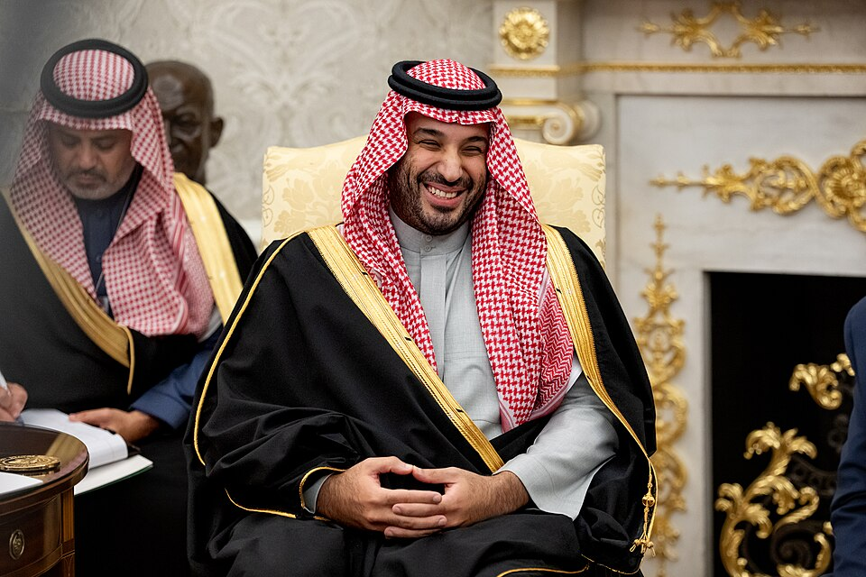
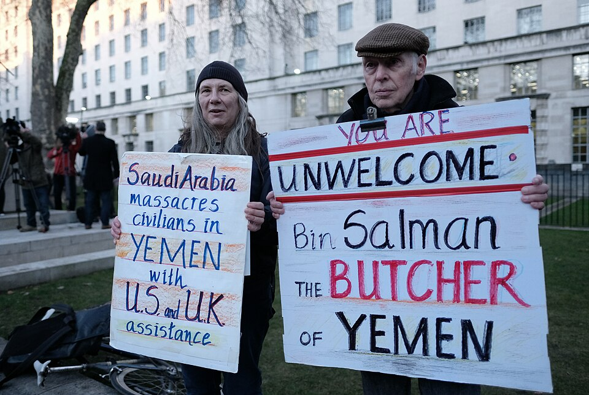
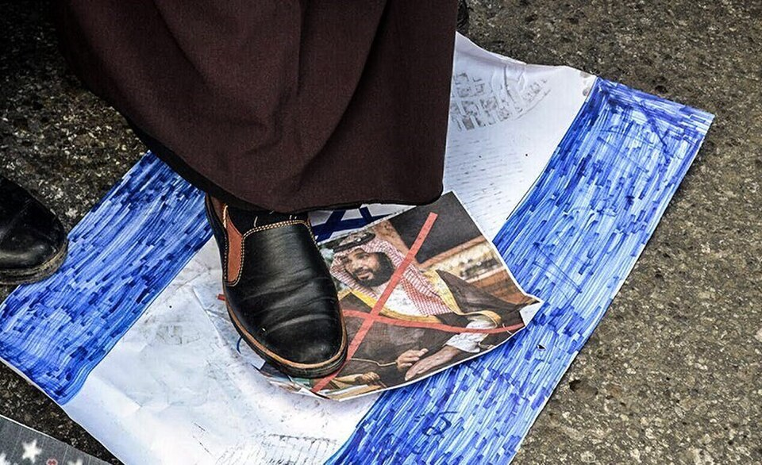
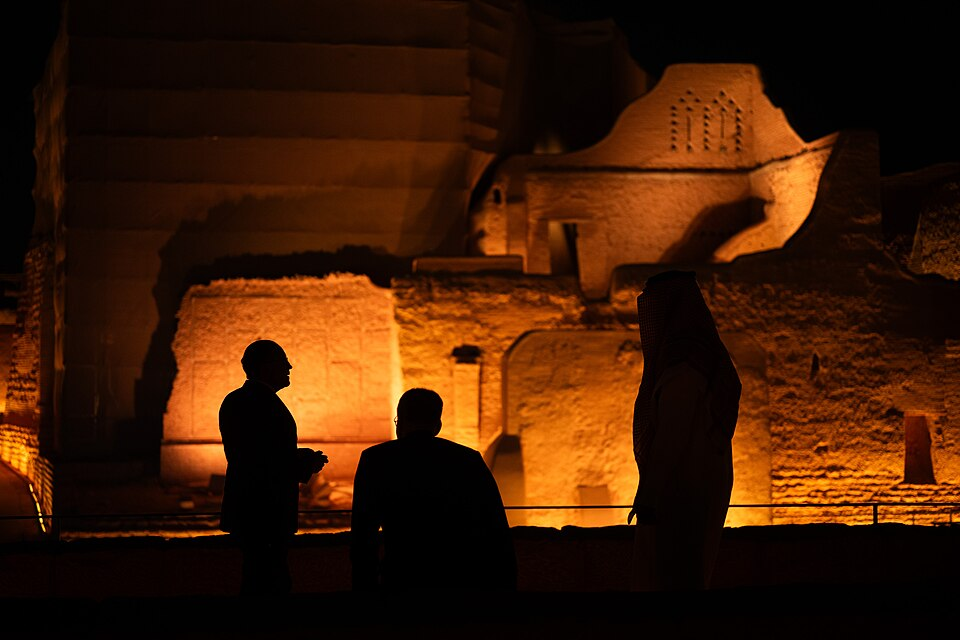

Varios misiles han sobrevolado la capital saudí, Riad, este sábado. El grupo insurgente yemení de los hutíes ha aumentado la intensidad de sus ataques contra los gobiernos de Yemen y Arabia Saudí desde la ruptura del alto el fuego en septiembre. Sin embargo, Arabia Saudí se ha quedado sola. En su intento de mantener la paz en Asia Occidental, el primer ministro Mohamed bin Salmán se ha quedado sin aliados fiables. En estos momentos, el mayor exportador de petróleo crudo del mundo se encuentra en una situación de la que es difícil ver la salida.
Mohamed bin Salmán
Es imposible comprender a la Arabia Saudí actual sin su primer ministro y príncipe heredero Mohamed bin Salmán. Bin Salmán entró en el poder político cuando en 2012 el heredero al trono falleció y su padre se convirtió en la primera persona en la línea de sucesión.
El príncipe se encontró con una región sacudida por la Primavera Árabe y la amenaza de una ola democratizadora. Arabia Saudí es una monarquía absoluta y uno de los siete países en el mundo que no se autodenomina como democrático. Por ello, estas protestas y revoluciones eran una amenaza existencial. Arabia Saudí ya había intervenido en Baréin para acabar con una insurgencia en 2011, y, una vez bin Salmán fue nombrado Ministro de Defensa en 2015, estas intervenciones para combatir movimientos revolucionarios se expandieron con el objetivo de reestabilizar los países, especialmente en Yemen contra los hutíes.
No obstante, Arabia Saudí sí llevaría a cabo acciones desestabilizadoras en otros países de la región. El país árabe siempre ha buscado una buena relación con Estados Unidos para lograr su agenda de liberalización económica y, en menor medida, social, proceso que se aceleró gracias a bin Salmán. Aprovechando la debilidad de la elites tradicionalistas religiosas debido al descrédito que el ascenso del DAESH les había causado, el príncipe heredero llevó a cabo el conocido como Saudi Vision 2030 para diversificar la economía saudita. Sin embargo, esta cercanía histórica con Estados Unidos siempre ha causado problemas con Siria e Irán. Por ello, Arabia Saudí incentivó el derrocamiento de sus gobiernos a través del envío de armamento a los rebeldes sirios y de las sanciones y programas de agitación en Irán.

El primer ministro, Bin Salman, en una visita a la Casa Blanca
Autor: The White House
La relación con Estados Unidos se fortaleció incluso más durante la presidencia de Donald Trump. El ejecutivo estadounidense defendió al gobierno saudí tras la purga política realizada en 2017 y después del asesinato y descuartizamiento del periodista Jamal Khashoggi en 2018. Durante su segundo mandato, Donald Trump llegó a defender su asesinato: “A mucha gente no le caía bien ese caballero (Khashoggi) del que usted habla. Cayera bien o no, hay cosas que pasan. Pero él (Bin Salman) no sabía nada, y podemos dejarlo así”.
El gobierno de Donald Trump también facilitó el acercamiento de bin Salmán a Israel. A pesar del gran sentimiento propalestino en Arabia Saudí, el gobierno ha intentado normalizar las relaciones durante la última década. Esto ha implicado un equilibrio muy complejo: se denunció el reconocimiento por parte de Estados Unidos de Jerusalén como capital israelí, pero se apoyó por primera vez la idea de un estado judío; se condenaron los planes para la anexión de Cisjordania, pero se negoció el reconocimiento del país…
Aún no siendo un éxito absoluto, la estrategia internacional de bin Salmán logró muchos de sus objetivos. Las revoluciones democratizadoras no se extendieron por la península arábica, el avance de los hutíes fue detenido en Yemen, el gobierno de Bashar al-Assad en Siria derrocado en 2024, las relaciones con Irán normalizadas en 2023 gracias a China (con la que se aumentó la cooperación a pesar de los campos de concentración para uigures) y hubo un acercamiento a Estados Unidos y la mayoría de países de la región, incluyendo Israel. Todo esto creó una estabilidad en Arabia Saudí que el gobierno aprovechó para lograr sus objetivos con vistas a 2030.
Por desgracia para el gobierno de Riad, este complicado equilibrio que habían logrado se ha derrumbado en los últimos años.
El efecto dominó
Tras el comienzo de la Guerra de Gaza y el consecuente genocidio contra la población palestina, bin Salmán se vio obligado a cortar relaciones con Israel y aseguró que solamente volvería a reestablecer la relación cuando el país reconociese a Palestina como estado y a Jerusalén Oriental como su capital. La dificil construccion de la relación entre los dos países, fue destruida en un instante.

"Arabia Saudí masacra a niños en Yemen con la asistencia de Reino Unido y Estados Unidos" - "No eres bienvenido, bin Salmán, el carnicero de de Yemen"
Autor: Alisdare Hickson
Cuando Estados Unidos e Israel atacaron a Irán durante la guerra de los doce días en 2025, Arabia Saudí se posicionó junto a Teherán y estrechó la relación diplomática. Sin embargo, esta se complicó mucho más con la guerra total en 2026. Arabia Saudí ha tratado de posicionarse como mediador: tras los bombardeos iraníes contra bases estadounidenses en Arabia Saudí, realizó unos bombardeos como respuesta, pero también estuvo presente durante el funeral del ayatolah Ali Khamenei. Es probable que estos esfuerzos sean la razón por la que los bombardeos sobre Arabia Saudí se detuvieran mucho más pronto que en otros países más cercanos a Israel como Emiratos Árabes Unidos (EAU). Aún así, existen informes que aseguran que bin Salmán presionó para realizar el conflicto con la esperanza de derrocar rápidamente a la República Islámica, aunque el gobierno siempre ha rechazado estas afirmaciones.
En cualquier caso, Arabia Saudí se ha visto directamente perjudicada por la guerra. El bloqueo del Estrecho de Ormuz ha impedido gran parte del transporte de petróleo del que aún depende la economía saudí. Además, la apertura de este nuevo frente bélico ha alejado a Estados Unidos que ahora ve como única prioridad en la región el derrocamiento del gobierno iraní.
De forma paralela, las relaciones con EAU se vieron gravemente dañadas con el estallido de la guerra civil sudanesa. La alianza tácita que se había formado cuando ambos se unieron para combatir a los hutíes en Yemen saltó por los aires al ambos países apoyar militarmente a diferentes lados del conflicto, con desencuentros de ambos países por el petróleo como antecedentes. Ambos países aumentaron su enfrentamiento aún más cuando los separatistas yemeníes, apoyados por Emiratos Árabes contra los hutíes, intentaron derrocar al gobierno yemení, apoyado por Arabia Saudí. Riad contestó con una dura campaña de bombardeos que acabó por completo con la organización separatista y expulsó a la tropas emiratíes.

Protesta en Gaza tras el reconocimiento de Jerusalén como capital de Israel por Estados Unidos
Autor: Tasnim News Agency
En busca de nuevas alianzas, Arabia Saudí firmó en el verano de 2026 el Acuerdo de Defensa Conjunta de La Meca con Pakistán y Turquía. Esta alianza cuenta con un mecanismo similar al de la OTAN por el cual “cualquier ataque armado contra cualquiera de los tres estados será considerado un ataque contra todos ellos”. Pese a ello, la alianza militar no ha logrado los efectos que bin Salmán esperaba.
En septiembre de 2026, las tensiones entre los hutíes y Arabia Saudí provocaron una escalada bélica no vista en muchos años. Los rebeldes empezaron a conquistar importantes zonas del territorio en Yemen mientras atacaban directamente a Arabia Saudí. Sin embargo, ni Pakistán ni Turquía consideraron estos ataques como hechos que activasen la cláusula de defensa mutua. Mientras aeropuertos, refinerías y oleoductos eran alcanzados por misiles, Riad pidió ayuda a Estados Unidos, pero el ejecutivo de Donald Trump denegó la petición argumentando que tenían todas sus prioridades en Irán. Y tras el bloqueo del estrecho de Bab el-Mandeb, Arabia Saudí perdió su única otra salida al mar y se encontró sin ningún aliado fiable.
Una (no tan) nueva fuerza

El ex-canciller de Austria, Alexander Schallenberg
Autor: Bundesministerium für europäische und internationale Angelegenheiten
El gobierno de bin Salmán ha intentado responder con fuerza a las tropas hutíes. Ha reforzado la narrativa de una guerra santa contra los chiíes, tras un ataque a la Meca que los hutíes aseguran que es de falsa bandera, y ha reanudado los bombardeos contra las posiciones rebeldes. A pesar de que esta muestra de fuerza pueda verse como que refuerza al gobierno saudí, también puede ser su fin.
En la Arabia Saudí moderna el poder siempre ha estado dividido entre los poderes políticos y religiosos. El ascenso del DAESH y de los Hermanos Musulmanes en países vecinos dio el pretexto perfecto a bin Salmán para acabar con esas élites y reforzar su poder. Sin embargo, ahora, sin un Estado Islámico fuerte, con la estructura internacional que bin Salmán había construido desintegrándose, una economía en problemas por su incapacidad de exportar el petróleo y el refuerzo de una retórica religiosa para defender la guerra en Yemen, es posible que las élites religiosas vuelvan a tener algo que decir en el estado. En un gobierno cuya principal prioridad ha sido la estabilidad y el mercado, esta es una amenaza existencial.